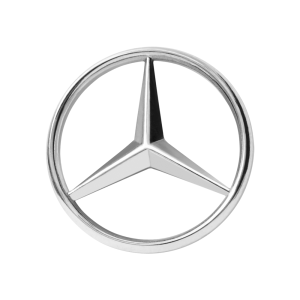
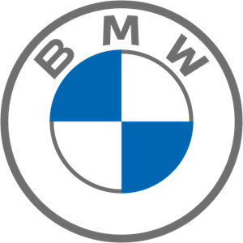

Hier onder kunt u mijn school stage's bekijken
Bij mercedes vdh in Mol heb ik mijn blokstage gedaan in het 7ste specalisatie jaar
Hier werd ik in gezet voor onderhoud te voeren
van de voertuigen van diverse klanten
Vervolgens heb ik ook kleine elektrische herstellingen gedaan.

Bij BMW Sneyers in Herentals heb ik mijn ATN blokstage gedaan in het 7ste specalisatie jaar
Hier werd ik in gezet voor onderhoud te voeren
van de voertuigen van diverse klanten
Kreeg ik meer inzicht bij diagnose stellen aan auto's
Bij deze ATN stage heb ik ook een opleidingstraject gevolgd in
Bornem voor beginnende BMW technieker te bekomen

In de Action ben ik jobstudent,
ik zorg er voor dat de winkel proper is voor de klanten,
reken de producten af van de klanten aan de kassa
en zorg er voor dat de rekken van de winkel mooi geordend zijn
In de zomer van 2022 was ik Groendienst arbeider
in de gemeente Retie hier werd ik in gezet voor het snoeien van struiken
en het uittrekken van onkruid
dit deed ik samen met zeer toffe en vriendelijke collega's
Dit wass mijn eerste jobstudentenwerk
in de slagerij werd ik ingezet voor de afwas tedoen
soms helpte ik ook bij het bereide van broodjes en pasta
die in de 24/7 shop kwamen van de slager
Hier werkte vervolgens met zeer aangename collega's